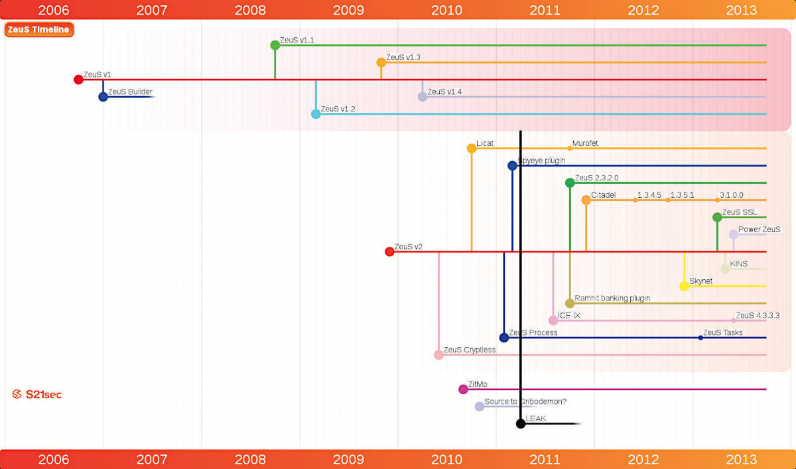
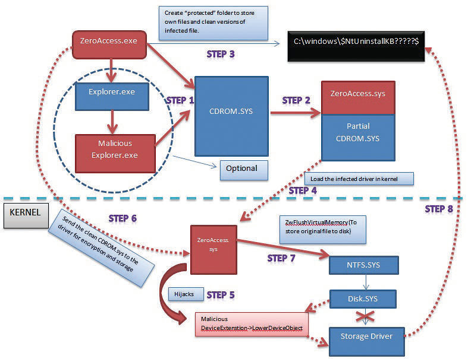
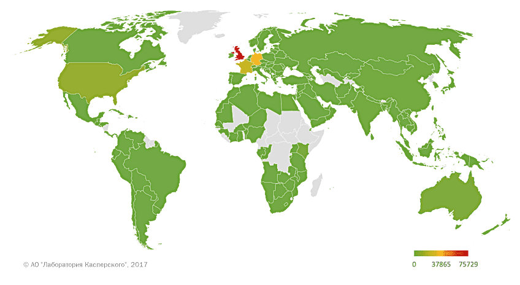
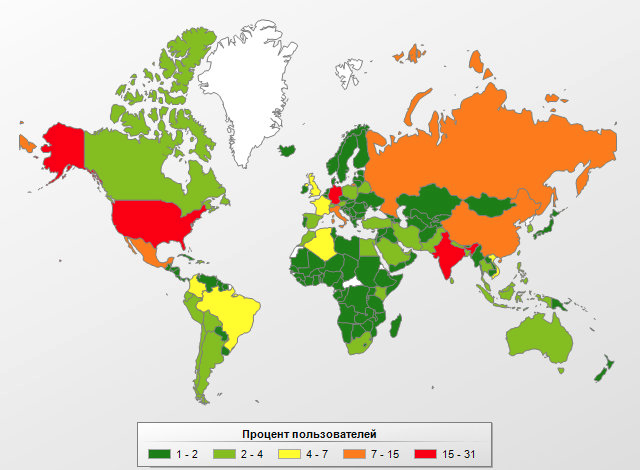
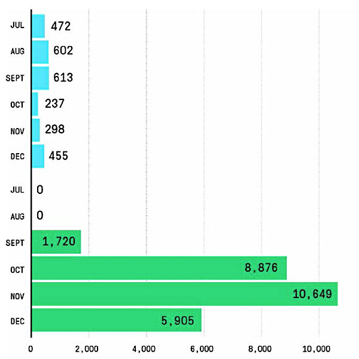

Статья с хакера:Самые злые ботнеты. Как появлялись и гибли крупнейшие армии вредоносных программ
Ботнетом нынче никого не удивишь: они встречаются сплошь и рядом, и лежащая в их основе зараза легко вычищается антивирусом — спасибо косорукости авторов, которые собирают малварь на коленке из перегноя и палок. Но бывает, что за вирусописательство берутся профи, и тогда ущерб становится колоссальным, а война со зловредом — затяжной и интересной. В этой статье я разберу такие истории, причем некоторые из них еще не закончились.
Охватить все даже самые интересные эпидемии в одной статье нереально, так что я отобрал лишь восемь наиболее показательных случаев. Причем даже их описать во всех деталях не получится, поэтому сразу предупреждаю, что какие-то подробности могут быть опущены — умышленно или нет. Помни и о том, что ситуация вокруг активных троянов вполне может измениться с момента публикации статьи.
ZeuS
диванных аналитиков, он применялся в 90% всех случаев банковского мошенничества в мире.
Сначала на основе ZeuS было создано несколько сотен разрозненных ботнетов, которые контролировались разными бандами киберпреступников. Автор или авторы бота просто продавали билдер каждому встречному и поперечному, а те делали из него собственные ботнеты.
Каждый распространял бот как мог — например, в 2009 году одна из группировок провела масштабную рассылку Zeus через спамерский ботнет Pushdo. По оценке компании Damballa, только в США тогда было заражено порядка 3,6 миллиона ПК. Всего же с момента появления Zeus заразилось более 13 миллионов компьютеров.
Разработчик Zeus был изначально известен под никами Slavik и Monstr, и именно он в 2007–2010 годах самостоятельно продавал и поддерживал бот. Так продолжалось до версии 2.0, когда в октябре 2010 года Slavik передал сырцы версии 2.0 разработчику трояна SpyEye и по легенде прекратил разработку. Но, по версии компании RSA, оригинальный автор никуда не ушел, а передача кода была отвлекающим маневром.
В августе 2010 года, то есть за два месяца до официального объявления о прекращении работы над Zeus, специалисты обнаружили ботнет, созданный на Zeus версии 2.1, которая ни на одном подпольном форуме тогда не продавалась. Из этого можно сделать вывод, что автор просто поменял бизнес-модель и решил сформировать собственный ботнет, а не продавать билдер бота всем желающим.
Из главных особенностей в Zeus 2.1 — схема связи с управляющими серверами изменилась: теперь адреса серверов создавались с помощью DGA (Domain Generation Algorithms). Для защиты от перехвата проверялась подпись загружаемого в ходе обновления файла (использовалась подпись RSA-1024).
К нововведениям этой версии некоторые исследователи относят и появление в сентябре сборки ZeuS-in-the-Mobile (ZitMo) для Android, Windows Mobile, BlackBerry и даже Symbian. Новоиспеченный трой работал в связке с «обычной» настольной версией Zeus и позволял обходить 2ФА онлайнового банкинга. По данным Check Point Software и Versafe, к концу 2012 года сборка ZitMo под названием Eurograber принесла своим хозяевам прибыль порядка 36 миллионов евро (около 47 миллионов долларов на тот момент).
Кто-то или пожадничал, или слил налево исходный код Zeus 2.0.8.9, но факт остается фактом: исходники почти актуальной версии Zeus попали в продажу в даркнете, это был февраль 2011 года. А потом то ли покупателей не нашлось, то ли продавца взломали — в мае исходники попали в паблик. Это событие стало, думаю, самым значимым для хакерского мира за 2011 год.
Отдельно стоит сказать о модуле HVNC (H означает Hidden). Это реализация VNC-сервера, но взаимодействует он с виртуальным рабочим столом, который пользователь увидеть не может. Позже на базе слитых исходников модуль HVNC переделали в отдельный проект.
После утечки сразу появились «умельцы», начавшие клепать из исходников Zeus свои трояны, которые порой были клонами Zeus чуть более, чем полностью, включая админку. Но были и более стоящие поделки — например, проект Citadel. Его главной особенностью стало создание онлайновой платформы, похожей на современный GitHub. Здесь заказчики могли запрашивать новые функции, сообщать об ошибках и добавлять собственные модули. Короче, разработка стала интерактивной и принесла немало денег своим админам. Покупателям даже предоставляли техподдержку — она включала, к примеру, постоянное поддержание Citadel в актуальном состоянии для обхода свежих защит в лице антивирусов.
Осенью 2011 года исследователь по имени Роман Хюсси (занимался изучением Zeus), исследуя один из вариантов Zeus, заметил странный UDP-трафик. Дальнейший анализ показал, что новый вариант Zeus имел несколько IP-адресов в конфигурационном блоке и компьютеры с этими IP отвечали инфицированной системе. За сутки было выявлено примерно 100 тысяч уникальных IP-адресов, с которыми связывалась новая модификация, из них большая часть была расположена в Индии, Италии и США.
Оказалось, что Zeus обзавелся пиринговыми функциями, предназначенными для обновления и основанными на протоколе Kademlia. Из-за использования названия скрипта gameover.php этой версии дали название GameOver.
В начале 2012 года обнаружился еще один вариант Zeus GameOver: он содержал встроенный сервер nginx, чтобы взаимодействовать с другими ботами через протокол HTTP. С этого момента каждый бот мог выступать в качестве прокси для связи с исходным C&C, а защита от распространения «обновлений» специалистами по другую сторону баррикад обеспечивалась все той же подписью файлов. Версия GameOver оказалась весьма живучей и активна до сих пор.
Для распространения бота использовались более 74 тысяч взломанных FTP-серверов, спам, мошенничество с фальшивой техподдержкой, эксплоиты и даже социальная инженерия в соцсетях. Короче, весь джентльменский набор.
Позже появилась информация о том, что ФБР совместно со специалистами примерно десятка стран раскрыло группировку, стоящую за созданием Zeus. Все ее участники были объявлены в розыск, в том числе и предполагаемый организатор — некто Евгений Богачёв. По данным ФБР, Богачёв живет в Анапе и владеет яхтой. За его голову предлагают рекордную сумму в 3 миллиона зеленых американских рублей! С тех пор об обновлениях Zeus слышно немного: автор, по видимости, залег на дно, а подвижек в розыске вообще нет. Будем ждать новостей.
Говоря «об обновлениях слышно немного», я имею в виду, что изначальный Zeus фактически перестал поддерживаться, но в 2015 году появилась его новая интересная модификация — она получила название Sphinx. Ее панель особо ничем не отличатся, но внутри это новый троян, хорошо переработанный неизвестными авторами. Сейчас, в связи с коронавирусом, он особенно активен и распространяется с помощью социальной инженерии. Для прикрытия использовалась липовая подпись «Лаборатории Касперского» и самопальный сертификат.
Лечение Zeus очень непростое: он успешно обходит антивирусы с помощью полиморфного шифрования, заражает множество файлов и постоянно обновляется. Лучшее лекарство — переустановить зараженную систему, но при большом желании можно попробовать найти и вылечить зараженные файлы, естественно, безо всяких гарантий успеха.
Storm
Серверный полиморфизм до этого применялся только в ботнете Stration, который впервые засветился в 2006 году. Впоследствии между этим ботнетом и Storm была короткая и не особенно интересная война за компьютеры пользователей. Тем не менее в какой-то момент Storm составлял до 8% всей малвари на компьютерах с Windows.
В июле 2007 года, на пике своего роста, ботнет генерировал порядка 20% всего спама в интернете, рассылая его с 1,4 миллиона компьютеров. Занимался он продвижением лекарств и других медикаментов: как относительно легальных, вроде виагры, так и запрещенных.
Примерно в то же время были замечены попытки разбить ботнет на несколько обособленных подсетей. Возможно, авторы хотели продавать доступ к зараженным машинам по частям заинтересованным лицам. Так или иначе, из этого ничего не вышло.
Ботнет довольно жестоко защищал свои ресурсы от слишком любопытных исследователей. Когда обнаруживались частые обращения с одного и того же адреса для скачивания обновлений бота, что любят делать в антивирусных компаниях, боты начинали DDoS-атаку этого адреса. Кроме того, были с переменным успехом атакованы сайты компаний, которые мешали хозяевам ботнета делать свое черное дело. Так, в результате DDoS-атак на небольшое время была нарушена работа служб Spamhaus, SURBL (Spam URI Realtime Blocklists) и URIBL (Realtime URI Blacklist). Это нужно было для того, чтобы антиспам-решения не смогли обновить базы и заблокировать рассылки.
В какой-то момент по суммарной производительности зараженные «Штормом» ПК обошли тогдашние суперкомпьютеры. Представь, какая мощь была в руках у владельцев Storm! Если бы они решили вместо рассылки спама заняться параллельными вычислениями... Впрочем, не будем о грустном. Криптовалюты, про майнинг которых ты, конечно, подумал, в тот момент еще не родились из идей Сатоси Накамото, так что майнить было нечего. А жаль. В роли злостного майнера ботнет смотрелся бы в нашей подборке куда интереснее.
Так бы шло и дальше, но в конце 2008 года ботнет, будто по мановению волшебной палочки, исчез. В «Лаборатории Касперского» считают, что это случилось из-за закрытия Russian Business Network — криминального абузоустойчивого хостинга из России. По другой версии, которая мне кажется более реальной, Storm был уничтожен силами исследователей безопасности. На конференции Chaos Communication Congress (декабрь 2008 года) группа хакеров показала тулзу Stormfucker, которая, используя баг в Storm, самостоятельно распространялась через сеть Оvernet и лечила зараженные компы. А в Microsoft, как обычно, происходящее толкуют по-своему: там считают, что избавиться от ботнета помогло обновление Windows. На чем-то одном специалисты так и не сошлись.
Конечно же, место под солнцем обычно не пустует, и с кончиной Storm появился новый ботнет из трояна Waledac. Хоть кодом он был совсем непохож на своего предшественника, но Waledac подозрительно напоминал Storm в некоторых особенностях: использование Fast Flux хостинга C&C, серверный полиморфизм, функции рассылки спама и механизм обновления через P2P. Даже шаблоны спамерских писем почти повторяли шаблоны из Storm. Рекламировал Waledac те же товары тех же продавцов, что и Storm. Наглядная демонстрация того, как один ботнет прикрывается и ему на смену тут же приходит новый.
Storm казался призраком, пока в 2010 году участники проекта Honeynet Project не обнаружили его новый вариант. Он приблизительно на две трети состоял из кода первого варианта: 236 из 310 функций червя остались без изменений. Улетел на помойку кусок, отвечающий за пиринг (похоже, из-за Stormfucker), а протокол общения с C&C переделали на HTTP (раньше — сокеты на TCP). К счастью, Storm 2.0 не получил такого широкого распространения, как его старший брат, что могло случиться из-за передачи сырцов первой версии другой команде разработчиков.
Заметить симптомы заражения было относительно несложно, если мониторить попытки запуска процессов. Обычно вредоносные процессы назывались gameX.exe, где X — номер. Возможны следующие варианты:
Также руткит не стеснялся подделывать антивирусные программы, чтобы пользователю казалось, что защита работает штатно, — при том что она не работала вовсе.
Таким образом, Storm стал одним из первых коммерческих готовых к использованию спамерских инструментов. Пусть просуществовал он недолго, но зато показал путь другим злоумышленникам, которые стали поступать схожим образом.
Mariposa
В коде бот назывался несколько проще — Butterfly Bot, но никто ведь никому не запрещает именовать вещи как ему вздумается, так что антивирусные компании придумали свое название и выдали его как официальное. Автору пришлось смириться.
Бот мог работать загрузчиком для других вредоносов всех мастей, «из коробки» умел доставать пароли из Firefox и IE, поднимал HTTP- и SOCKS-прокси для прикрытия атакующего. И конечно, DDoS, причем сразу два модуля: TCP SYN flood и UDP flood.
Одним из способов распространения были флешки и в те времена еще работавший autorun.ini. Правда, это сильно палило бот (не зря же он основан на Palevo): Mariposa создавал сильно обфусцированный файл автозагрузки, в котором инструкции перемешивались с большим количеством символов разных кодировок. Таким образом, ini-файл каждый раз выглядел по-разному.
Главной деятельностью Mariposa был скам и уже ставший традиционным DDoS. Сюда входила кража с компьютеров пострадавших аккаунтов и их дальнейшая перепродажа. Затем банковские аккаунты использовались для оплаты услуг, а соцсети — для всякого рода скама. Спойлер: сейчас назначение краденных данных ровно такое же.
По части защиты от изучения авторы бота постарались: включили множество защит, которые, впрочем, все равно не помогли избежать закрытия ботнета. К защитным механизмам можно отнести частые обновления и модификации бинарного кода, позволявшие обходить сигнатурный анализ, противодействие запуску на виртуалках и в песочницах и новый защищенный протокол взаимодействия с командным центром на базе UDP.
К сожалению авторов ботнета (о своей причастности прямо заявляла группировка DDP Team из Испании), в декабре 2009 года карьера Mariposa была закончена. Исследователям и полиции удалось вычислить, захватить и отключить C&C-серверы в той же Испании. А три месяца спустя (в феврале) испанские правоохранители арестовали троих членов группы DDP Team. Занятная деталь — никто из арестованных не умел программировать.
По утверждению испанской полиции, ботоводы нафакапили совсем уж по-детски: подключились как админы к С&C со своего домашнего IP, вместо того чтобы использовать VPN или прокси. Тем не менее призвать к ответу преступников не удалось, во многом из-за того, что управление ботнетом в то время вообще не считалось в Испании преступлением, а для уголовного дела полиции пришлось бы доказать, что они воровали информацию и затем использовали ее для получения прибыли. По официальной информации, с помощью Mariposa были украдены приватные данные больше чем у 800 тысяч человек в 190 странах — правда, в расследовании это применить не удалось за неимением веских доказательств.
В итоге расследование зашло в тупик, а освободившиеся через пару месяцев админы Mariposa посетили офис компании Panda Security, которая в значительной мере приложила руку к их поимке, и стали просить взять их на работу: по их словам, они оказались совершенно без денег после того, как инфраструктура Mariposa была разрушена. Ушли, конечно же, ни с чем.
Несмотря на уничтожение C&C Mariposa, c конца 2010 года число его обнаружений опять начало расти, а через полгода был найден еще один ботнет на основе того же Palevo, численностью около 11 миллионов машин. Назвали его Metulji («бабочка» по-словенски).
Буквально через полтора-два месяца после обнаружения ботнета его операторы, жители сербской Боснии, были вычислены. Ребята тоже не заморачивались и сорили деньгами направо и налево. Арестовали их совместными усилиями полиции Словении, ФБР и Интерпола. С тех пор Palevo со своими производными исчез из списков топовых угроз.
Как видим, даже кулхацкеры, обладающие минимальными знаниями, могут собирать нехилые по численности ботнеты, даже не используя спам и эксплоит-паки. Двенадцать миллионов на ровном месте — серьезный результат.
ZeroAccess
Интересная фишка ZeroAccess — «ловля на живца» для обламывания антивирусов. Кроме своего основного драйвера-руткита, бот имел дополнительный драйвер ядра для создания приманки — объекта, на который клевали антивирусы и прочие якобы защитные механизмы. Этот драйвер создавал устройство \Device\svchost.exe и сохранял подставной бинарь по адресу \Device\svchost.exe\svchost.exe. Доступ к этому псевдофайлу мониторился руткитом. Если что-то задевало наживку, ZeroAccess убивал процесс, инжектируя в него код, который вызывал ExitProcess(). А чтобы предотвратить последующие запуски попавшейся программы, для ее исполняемого файла ZeroAccess сбрасывал ACL, чтобы запретить чтение и выполнение. Таким образом, однажды попавшись, антивирус больше не мог запуститься.
В январе 2010 года создатели ZeroAccess выкатили обновление, которое обогатило ZeroAccess новыми функциями. Для этого (сюрприз!) использовались ресурсы Russian Business Network. В этой версии стало более заметным явное заимствование идей более старого руткита TDL-3: запуск теперь выполнялся через заражение драйвера, а для хранения компонентов руткита использовалось скрытое хранилище в отдельном разделе жесткого диска.
До апреля 2011 года 64-разрядные версии Windows были в относительной безопасности и не заражались ZeroAccess. Однако в мае с очередным обновлением это досадное упущение было исправлено, но не сказать, чтобы очень технологично. Дело в том, что в 32-битной версии руткит работал на уровне ядра, а в 64-битной среде все работало в пользовательском пространстве. Видимо, авторы решили не заморачиваться с обходом проверки подписи драйвера и сделали такой костыль.
Чтобы повысить живучесть, добавили P2P на базе TCP для распространения своих модулей, а также список начальных пиров, который содержал 256 IP-адресов супернод. Антивирусные аналитики отмечают, что эта версия стала загружать два вида полезной нагрузки — для кликфрода и майнинга.
Шло время. Все больше людей переходили на 64-битные ОС, разработка ядерного руткита для которых затруднена. В мае 2012 года драйвер ядра был закрыт, и теперь вся работа происходила в usermode. Алгоритм работы пиринговой сети тоже немного поменялся, а длину ключа RSA увеличили в два раза — с 512 до 1024 бит. Если раньше пиринговые соединения шли только по TCP, то теперь список IP-адресов запрашивался по UDP, а список модулей — по ТСР. Как и прежде, оставалось разделение по типу полезной нагрузки: на выбор был модуль кликфрода или майнинга.
Пример ZeroAccess хорошо иллюстрирует принцип бритвы Оккама — не умножай сущности без надобности, или, по-простому, не усложняй. ZeroAccess начинался как технологичная разработка, потом в ходе эволюции от него отвалился руткит, но ботнет продолжал жить и даже обзавелся такой модной фичей, как P2P.
По оценкам компании Sophos, количество зараженных ботом компьютеров в конце лета 2012 года составляло более 9 миллионов, а активных заражений — около миллиона. По мнению экспертов, ботнет ZeroAccess был самым активным в 2012 году.
Антивирусные компании, конечно, не игнорировали существование ботнета и активно искали методы вторжения через пиринговый протокол ZeroAccess, чтобы вывести его из строя. В марте 2013 года за дело взялись инженеры из Symantec и успешно обнаружили уязвимость в протоколе ботнета, которая позволяла, хоть и с большим трудом, нарушить его работу.
Одновременно продолжалось наблюдение за активностью ботнета, и 29 июня специалисты Symantec заметили, что через пиринговую сеть распространяется новая версия ZeroAccess. Обновленная версия содержала определенные изменения, которые закрывали уязвимость, найденную ранее. Это, похоже, и подтолкнуло операцию по захвату ботнета, которая стартовала 16 июля. Исследователи пытались успеть перехватить управление до того, как обновление пришло на все узлы. В результате из ботсети вышло более полумиллиона ботов.
Но еще больших успехов добились вайтхеты из Microsoft: в декабре 2013 года совместно с силовыми структурами разных стран они нарушили работу ZeroAccess, взяв под свой контроль C&C. Правоохранители получили ордеры на обыск и изъятие серверов, которые откликались по 18 IP-адресам и с которых управлялся ботнет. После этой операции боты получили от авторов последнее обновление с сообщением WHITE FLAG. Короче, ботнет сдался.
Принцип работы
Технически ботнет остался жив, но обновлений он больше никогда не получит, так как командные серверы канули в Лету. Бот не обновляется, детект постоянно растет, и его обезвреживает все больше антивирусов. Но нельзя исключать, что разработчики сейчас трудятся над новой версией ZeroAccess.
Dridex
Первое появление Dridex (тогда Cridex) — примерно сентябрь 2011 года. Бот уже тогда умел использовать веб-инжекты для кражи денег в интернете, а также мог заражать USB-накопители. Поэтому изначально он классифицировался не как троян, а как червь. Веб-инжекты же оказались подозрительно похожими по стилю на Zeus — этому могла поспособствовать утечка исходных кодов последнего в 2011 году. Позже, в 2012 году, злоумышленники отказались от заражения USB.
Сходство веб-инжектов Zeus и Dridex — не единственная объединяющая их черта. Конкретно с версией Gameover Zeus общими оказались механизмы работы с регулярными выражениями, способ распространения (почтовый спам), некоторые аспекты работы установщика (основное тело вируса и загрузчик), а также набор доступных компонентов на зараженной системе. В их список входит SOCKS-прокси и скрытый VNC, очевидно позаимствованный из Zeus.
К началу 2015 года в Dridex появилось даже некое подобие пиринговой сети, что опять же напоминает Gameover Zeus. Честным P2P это назвать нельзя, потому что не все узлы сети были равноправными. Вместо этого существовали суперноды, адреса которых указывались в конфигурационном файле трояна, в XML-секции <nodes>. Также появилось шифрование протокола общения с командным центром.
Сеть быстро развивалась, и преступники казались неуловимыми, но 28 августа 2015 года был найден и арестован один из администраторов Dridex. Часть ботов (они были разделены на подсети) пропала из сети, но через короткое время они не только вернулись, но и привели новых. Похоже, другие админы перехватили контроль над подсетями арестованного товарища и продолжили работу без него.
После ареста сразу же ужесточились меры предосторожности: появилась фильтрация по географическому положению на основе IP. Если страна не попадала в список, то бот получал сообщение об ошибке. Изучению трояна это, конечно, не помешало. Через пару месяцев владельцы сети выкатили обновление загрузчика трояна, в котором XML-конфиг заменили на бинарный. На самом деле это решение уже использовалось в ранних версиях тогдашнего Cridex, так что этот ход был скорее призван запутать исследователей, чем сделать троян удобнее.
Еще одну интересную версию нашли в начале 2017 года. По своим возможностям она была похожа на третью, но анализ новых образцов теперь сильно осложняется тем, что загрузчик работает максимум пару дней. Решение опять же не новое: примерно так же было с трояном Lurk, только там загрузчик работал всего несколько часов. Когда время жизни загрузчика заканчивается, сменяются ключи шифрования и старые образцы становятся бесполезными. Все устаревшие экземпляры получают от сервера ошибку 404.
Шифрование осталось как у предка — RC4 со статическим ключом в теле трояна. Шифрование было нужно для защиты от обнаружения в трафике, а не для блокировки исследований, поскольку RC4 — алгоритм симметричный и легко поддающийся взлому перебором, но системы анализа трафика перед таким псевдослучайным потоком данных бессильны.
География распространения
Большинство жертв находятся в Европе. Большая часть заражений была зафиксирована в Великобритании, следом идут Германия и Франция. Российские компьютеры Dridex не заражает: командные серверы не отвечают на запросы с российских IP.
За годы существования Dridex вайтхеты и правоохранительные органы разных стран не раз безуспешно пытались прекратить активность ботнета. В 2009 году Министерство юстиции США выдвинуло обвинения в адрес двух россиян, которые, по их данным, стоят за разработкой малвари Dridex и не только.
Обвинительное заключение гласит, что 32-летний Максим Якубец и 38-летний Игорь Турашев были разработчиками известнейшего банковского трояна Dridex и Якубец выступал лидером группы. Кроме того, Якубца также обвиняют в разработке и распространении Zeus.
Но пока что в Dridex только появляются новые и новые техники обхода системы контроля учетных записей (UAC), которые помогают остаться на плаву и продолжать заражать машины с Windows. Ущерб назвать сложно, но даже по самым щадящим оценкам он измеряется в сотнях миллионов долларов.
Emotet
Заражение активно происходит через спам: письма содержат вредоносное вложение с макросом. Макрос просто так не выполняется, но методами социальной инженерии заставляет жертву запустить себя, что приводит к заражению.
На рубеже 2016 и 2017 годов создатели перепрофилировали ботнет, и теперь он преимущественно выступает загрузчиком для других вредоносов всех мастей. Впрочем, вычеркивать его из списка банкеров тоже пока не стоит.
Ботнет продается по модели IaaS или MaaS (malware as a service) другим киберпреступным группировкам. В частности, Emotet часто действует в тандеме с Ryuk.
Во второй половине 2019 года количество заражений Emotet резко выросло. Загрузчик внезапно отметился всплеском активности. В сентябре, после короткой четырехмесячной паузы, Emotet снова начал действовать с многократно нарастающей силой. Всего во второй половине 2019 года всего было обнаружено 27 150 экземпляров Emotet (рост на 913% по сравнению с прошлым годом). Во время этой атаки зафиксировали более 1000 уникальных IP-адресов, по которым размещались C&C Emotet. На графике ниже показано количество найденных образцов Emotet за вторую половину 2018-го и 2019 год. Видна колоссальная разница.
В 2020-м же была обнаружена новая особенность: Emotet ведет себя как червь, взламывая плохо прикрытые сети Wi-Fi и распространяясь там. Еще одна демонстрация того, как во имя более эффективного заражения злоумышленники изобретают новые техники.
Что касается географии распространения, то сильнее всех пострадали Германия, США, Индия и Россия. В топ потерпевших стран входит также Китай, Италия и Польша. Emotet по-прежнему активен, так что картина заражения постоянно меняется и даже к моменту публикации этой статьи может измениться.
До настоящего времени о создателях Emotet ничего не известно, так что увлекательной истории идиотизма разработчиков и находчивости правоохранителей тут не будет. А жаль.
3ve
Распространялся 3ve через ботнеты Methbot и Kovter и имел несколько схем работы.
Одна из схем получила идентификатор 3ve.1, но первыми ее обнаружили специалисты WhiteOps и назвали MethBot. Также эту кампанию отслеживали эксперты из Symantec и ESET, под именами Miuref и Boaxxe соответственно. Естественно, тогда никто не знал, что эта операция всего лишь небольшой кусочек более масштабного рекламного мошенничества.
Другая схема использовала в первую очередь серверы в дата-центрах, а не компьютеры простых пользователей — боты имитировали поведение живых пользователей мобильных и стационарных устройств. По информации ФБР, операторы 3ve использовали около 1900 серверов в коммерческих дата-центрах, а в их распоряжении находилось порядка 5000 сайтов с рекламой.
Операторы 3ve спалились после того, как стали подделывать BGP и выделяли себе блоки IP-адресов, принадлежащие реальным клиентам, чтобы замаскировать мошенническую активность. Когда же рекламные сети начали блокировать адреса, связанные со схемой 3ve.1, операторы просто арендовали зараженные машины в ботнете Kovter. Новые боты открывали скрытые окна браузеров и действовали дальше по старой схеме.
В третьей схеме все осталось по-старому, но вместо огромного количества маломощных ботов в кампании участвовали несколько мощных серверов и множество арендованных прокси для сокрытия серверов.
На пике активности ботнет 3ve ежедневно генерировал около 3 миллиардов мошеннических запросов, использовал в районе 10 тысяч фальшивых сайтов для показа рекламы, имел более тысячи бот-серверов в дата-центрах и контролировал свыше миллиона IP-адресов, необходимых для сокрытия ботов.
Закрыт ботнет совместными усилиями Google, ФБР, Adobe, Amazon, ESET, Malwarebytes и других компаний. Авторов было восемь, на них заведено тринадцать уголовных дел. Шестеро авторов — россияне, еще двое — казахи. Иногда легенды про русских хакеров не врут!
По информации Google, после того как инфраструктура 3ve была занесена в черные списки и против нее применили синкхолинг, в рекламном мошенничестве наступило настоящее затишье. Хотя люди в погонах не называют точных доходов группы, эксперты оценивают заработок 3ve не менее чем в 30 миллионов долларов США.
Mirai
Этот ботнет разработали студенты, которые почему-то разозлились на собственный университет и хотели организовать DDoS-атаки на него. Но они что-то недорассчитали, и теперь это самый крупный IoT-ботнет, если учесть все его клоны.
Ботнет сначала тихо рос, но после нескольких атак его заметили и начали охоту за создателями. Те не придумали ничего умнее, чем просто опубликовать исходники. Мол, не обязательно же мы авторы: это кто угодно мог быть, исходники-то открыты. Этот финт ушами им не помог, и авторов нашли. К сожалению, было уже слишком поздно: другие группировки забесплатно получили мощный и опасный инструмент. Количество ботнетов на основе Mirai (а порой и полных его клонов) перевалило за сто и продолжает расти.
В сентябре 2016 года, после публикации Брайаном Кребсом статьи о продавцах ботнетов для DDoS, Кребс сам стал жертвой необычно сильной DDoS-атаки, мощность которой на пике достигла 665 Гбайт/с. Эта атака вообще стала одной из самых мощных среди известных. Хостер больше такое терпеть не стал, и сайт временно прилег, пока не нашелся новый хостер.
Еще через месяц была устроена мощная атака против компании DynDNS. Она проходила в две волны примерно по полтора часа каждая. Несмотря на оперативную реакцию и принятые для отражения атаки меры, она все же сказалась на пользователях. Последствия были видны до вечера того же дня. Что примечательно, был атакован не один сервер, а множество по всему миру. Инженеры явно не ожидали такой подачи и не смогли нормально среагировать. В результате пострадали как минимум Twitter, GitHub, SoundCloud, Spotify и Heroku.
Для атаки на DNS-провайдера были использованы, что иронично, DNS-запросы. Трафик превышал нормальный почти на два порядка, и это не считая того, что сисадмины срочно ввели фильтрацию. Тогда DNS-амплификация уже была описана, но всерьез не воспринималась. Атака на Dyn исправила положение, так что уязвимых перед этой техникой серверов осталось уже не так много.
Согласно расследованию, в атаке участвовало всего около 100 тысяч излишне «умных» устройств. Тем не менее атака получилась впечатляющей по своим масштабам.
Внутри Mirai — небольшой и чистый код, который, правда, не отличался технологичностью. Для распространения задействовалась всего 31 пара логин-пароль, но даже этого оказалось достаточно, чтобы захватить более полумиллиона устройств.
Вывод
Мощные ботнеты приходят и уходят: стоит ИБ-исследователям и правоохранителям закрыть одну сеть (а иногда и ее владельцев), как на горизонте появляется следующая, нередко еще более угрожающая. Для простых смертных же мораль здесь очень простая: ставь надежные пароли на всех своих устройствах и обновляй прошивки, и тогда твой компьютер, роутер и слишком умный холодильник не начнут работать на преступную группировку.
Ботнетом нынче никого не удивишь: они встречаются сплошь и рядом, и лежащая в их основе зараза легко вычищается антивирусом — спасибо косорукости авторов, которые собирают малварь на коленке из перегноя и палок. Но бывает, что за вирусописательство берутся профи, и тогда ущерб становится колоссальным, а война со зловредом — затяжной и интересной. В этой статье я разберу такие истории, причем некоторые из них еще не закончились.
Охватить все даже самые интересные эпидемии в одной статье нереально, так что я отобрал лишь восемь наиболее показательных случаев. Причем даже их описать во всех деталях не получится, поэтому сразу предупреждаю, что какие-то подробности могут быть опущены — умышленно или нет. Помни и о том, что ситуация вокруг активных троянов вполне может измениться с момента публикации статьи.
ZeuS
- Краткая характеристика: банковский троян
- Годы жизни: 2007 — настоящее время
- Количество заражений: более 13 миллионов
- Метод распространения: эксплоит-пак
- Распространение: 196 стран
- Ущерб: более 120 миллионов долларов
Сначала на основе ZeuS было создано несколько сотен разрозненных ботнетов, которые контролировались разными бандами киберпреступников. Автор или авторы бота просто продавали билдер каждому встречному и поперечному, а те делали из него собственные ботнеты.
Каждый распространял бот как мог — например, в 2009 году одна из группировок провела масштабную рассылку Zeus через спамерский ботнет Pushdo. По оценке компании Damballa, только в США тогда было заражено порядка 3,6 миллиона ПК. Всего же с момента появления Zeus заразилось более 13 миллионов компьютеров.
Разработчик Zeus был изначально известен под никами Slavik и Monstr, и именно он в 2007–2010 годах самостоятельно продавал и поддерживал бот. Так продолжалось до версии 2.0, когда в октябре 2010 года Slavik передал сырцы версии 2.0 разработчику трояна SpyEye и по легенде прекратил разработку. Но, по версии компании RSA, оригинальный автор никуда не ушел, а передача кода была отвлекающим маневром.
В августе 2010 года, то есть за два месяца до официального объявления о прекращении работы над Zeus, специалисты обнаружили ботнет, созданный на Zeus версии 2.1, которая ни на одном подпольном форуме тогда не продавалась. Из этого можно сделать вывод, что автор просто поменял бизнес-модель и решил сформировать собственный ботнет, а не продавать билдер бота всем желающим.
Из главных особенностей в Zeus 2.1 — схема связи с управляющими серверами изменилась: теперь адреса серверов создавались с помощью DGA (Domain Generation Algorithms). Для защиты от перехвата проверялась подпись загружаемого в ходе обновления файла (использовалась подпись RSA-1024).
К нововведениям этой версии некоторые исследователи относят и появление в сентябре сборки ZeuS-in-the-Mobile (ZitMo) для Android, Windows Mobile, BlackBerry и даже Symbian. Новоиспеченный трой работал в связке с «обычной» настольной версией Zeus и позволял обходить 2ФА онлайнового банкинга. По данным Check Point Software и Versafe, к концу 2012 года сборка ZitMo под названием Eurograber принесла своим хозяевам прибыль порядка 36 миллионов евро (около 47 миллионов долларов на тот момент).
Кто-то или пожадничал, или слил налево исходный код Zeus 2.0.8.9, но факт остается фактом: исходники почти актуальной версии Zeus попали в продажу в даркнете, это был февраль 2011 года. А потом то ли покупателей не нашлось, то ли продавца взломали — в мае исходники попали в паблик. Это событие стало, думаю, самым значимым для хакерского мира за 2011 год.
Отдельно стоит сказать о модуле HVNC (H означает Hidden). Это реализация VNC-сервера, но взаимодействует он с виртуальным рабочим столом, который пользователь увидеть не может. Позже на базе слитых исходников модуль HVNC переделали в отдельный проект.
После утечки сразу появились «умельцы», начавшие клепать из исходников Zeus свои трояны, которые порой были клонами Zeus чуть более, чем полностью, включая админку. Но были и более стоящие поделки — например, проект Citadel. Его главной особенностью стало создание онлайновой платформы, похожей на современный GitHub. Здесь заказчики могли запрашивать новые функции, сообщать об ошибках и добавлять собственные модули. Короче, разработка стала интерактивной и принесла немало денег своим админам. Покупателям даже предоставляли техподдержку — она включала, к примеру, постоянное поддержание Citadel в актуальном состоянии для обхода свежих защит в лице антивирусов.
Осенью 2011 года исследователь по имени Роман Хюсси (занимался изучением Zeus), исследуя один из вариантов Zeus, заметил странный UDP-трафик. Дальнейший анализ показал, что новый вариант Zeus имел несколько IP-адресов в конфигурационном блоке и компьютеры с этими IP отвечали инфицированной системе. За сутки было выявлено примерно 100 тысяч уникальных IP-адресов, с которыми связывалась новая модификация, из них большая часть была расположена в Индии, Италии и США.
Оказалось, что Zeus обзавелся пиринговыми функциями, предназначенными для обновления и основанными на протоколе Kademlia. Из-за использования названия скрипта gameover.php этой версии дали название GameOver.
В начале 2012 года обнаружился еще один вариант Zeus GameOver: он содержал встроенный сервер nginx, чтобы взаимодействовать с другими ботами через протокол HTTP. С этого момента каждый бот мог выступать в качестве прокси для связи с исходным C&C, а защита от распространения «обновлений» специалистами по другую сторону баррикад обеспечивалась все той же подписью файлов. Версия GameOver оказалась весьма живучей и активна до сих пор.

Для распространения бота использовались более 74 тысяч взломанных FTP-серверов, спам, мошенничество с фальшивой техподдержкой, эксплоиты и даже социальная инженерия в соцсетях. Короче, весь джентльменский набор.
Позже появилась информация о том, что ФБР совместно со специалистами примерно десятка стран раскрыло группировку, стоящую за созданием Zeus. Все ее участники были объявлены в розыск, в том числе и предполагаемый организатор — некто Евгений Богачёв. По данным ФБР, Богачёв живет в Анапе и владеет яхтой. За его голову предлагают рекордную сумму в 3 миллиона зеленых американских рублей! С тех пор об обновлениях Zeus слышно немного: автор, по видимости, залег на дно, а подвижек в розыске вообще нет. Будем ждать новостей.
Говоря «об обновлениях слышно немного», я имею в виду, что изначальный Zeus фактически перестал поддерживаться, но в 2015 году появилась его новая интересная модификация — она получила название Sphinx. Ее панель особо ничем не отличатся, но внутри это новый троян, хорошо переработанный неизвестными авторами. Сейчас, в связи с коронавирусом, он особенно активен и распространяется с помощью социальной инженерии. Для прикрытия использовалась липовая подпись «Лаборатории Касперского» и самопальный сертификат.
Лечение Zeus очень непростое: он успешно обходит антивирусы с помощью полиморфного шифрования, заражает множество файлов и постоянно обновляется. Лучшее лекарство — переустановить зараженную систему, но при большом желании можно попробовать найти и вылечить зараженные файлы, естественно, безо всяких гарантий успеха.
Storm
- Краткая характеристика: email-червь для спама и DDoS
- Годы жизни: 2007–2008
- Количество заражений: около 2 миллионов
- Метод распространения: спам
Серверный полиморфизм до этого применялся только в ботнете Stration, который впервые засветился в 2006 году. Впоследствии между этим ботнетом и Storm была короткая и не особенно интересная война за компьютеры пользователей. Тем не менее в какой-то момент Storm составлял до 8% всей малвари на компьютерах с Windows.
В июле 2007 года, на пике своего роста, ботнет генерировал порядка 20% всего спама в интернете, рассылая его с 1,4 миллиона компьютеров. Занимался он продвижением лекарств и других медикаментов: как относительно легальных, вроде виагры, так и запрещенных.
Примерно в то же время были замечены попытки разбить ботнет на несколько обособленных подсетей. Возможно, авторы хотели продавать доступ к зараженным машинам по частям заинтересованным лицам. Так или иначе, из этого ничего не вышло.
Ботнет довольно жестоко защищал свои ресурсы от слишком любопытных исследователей. Когда обнаруживались частые обращения с одного и того же адреса для скачивания обновлений бота, что любят делать в антивирусных компаниях, боты начинали DDoS-атаку этого адреса. Кроме того, были с переменным успехом атакованы сайты компаний, которые мешали хозяевам ботнета делать свое черное дело. Так, в результате DDoS-атак на небольшое время была нарушена работа служб Spamhaus, SURBL (Spam URI Realtime Blocklists) и URIBL (Realtime URI Blacklist). Это нужно было для того, чтобы антиспам-решения не смогли обновить базы и заблокировать рассылки.
В какой-то момент по суммарной производительности зараженные «Штормом» ПК обошли тогдашние суперкомпьютеры. Представь, какая мощь была в руках у владельцев Storm! Если бы они решили вместо рассылки спама заняться параллельными вычислениями... Впрочем, не будем о грустном. Криптовалюты, про майнинг которых ты, конечно, подумал, в тот момент еще не родились из идей Сатоси Накамото, так что майнить было нечего. А жаль. В роли злостного майнера ботнет смотрелся бы в нашей подборке куда интереснее.
Так бы шло и дальше, но в конце 2008 года ботнет, будто по мановению волшебной палочки, исчез. В «Лаборатории Касперского» считают, что это случилось из-за закрытия Russian Business Network — криминального абузоустойчивого хостинга из России. По другой версии, которая мне кажется более реальной, Storm был уничтожен силами исследователей безопасности. На конференции Chaos Communication Congress (декабрь 2008 года) группа хакеров показала тулзу Stormfucker, которая, используя баг в Storm, самостоятельно распространялась через сеть Оvernet и лечила зараженные компы. А в Microsoft, как обычно, происходящее толкуют по-своему: там считают, что избавиться от ботнета помогло обновление Windows. На чем-то одном специалисты так и не сошлись.
Конечно же, место под солнцем обычно не пустует, и с кончиной Storm появился новый ботнет из трояна Waledac. Хоть кодом он был совсем непохож на своего предшественника, но Waledac подозрительно напоминал Storm в некоторых особенностях: использование Fast Flux хостинга C&C, серверный полиморфизм, функции рассылки спама и механизм обновления через P2P. Даже шаблоны спамерских писем почти повторяли шаблоны из Storm. Рекламировал Waledac те же товары тех же продавцов, что и Storm. Наглядная демонстрация того, как один ботнет прикрывается и ему на смену тут же приходит новый.
Storm казался призраком, пока в 2010 году участники проекта Honeynet Project не обнаружили его новый вариант. Он приблизительно на две трети состоял из кода первого варианта: 236 из 310 функций червя остались без изменений. Улетел на помойку кусок, отвечающий за пиринг (похоже, из-за Stormfucker), а протокол общения с C&C переделали на HTTP (раньше — сокеты на TCP). К счастью, Storm 2.0 не получил такого широкого распространения, как его старший брат, что могло случиться из-за передачи сырцов первой версии другой команде разработчиков.
Заметить симптомы заражения было относительно несложно, если мониторить попытки запуска процессов. Обычно вредоносные процессы назывались gameX.exe, где X — номер. Возможны следующие варианты:
- game0.exe — бэкдор и загрузчик в одном флаконе, этот процесс и запускал остальные;
- game1.exe — SMTP-сервер для пересылки спама;
- game2.exe — стилер адресов email;
- game3.exe — модуль рассылки спама;
- game4.exe — DDoS-утилита;
- game5.exe — процесс обновления бота.
Также руткит не стеснялся подделывать антивирусные программы, чтобы пользователю казалось, что защита работает штатно, — при том что она не работала вовсе.
Таким образом, Storm стал одним из первых коммерческих готовых к использованию спамерских инструментов. Пусть просуществовал он недолго, но зато показал путь другим злоумышленникам, которые стали поступать схожим образом.
Mariposa
- Краткая характеристика: троян-червь
- Годы жизни: 2009–2011
- Количество заражений: 12 + 11 миллионов (две волны)
- Методы распространения: пиратский софт, самораспространение через флешки, пиринговые сети и MSN messenger
- Распространение: 190 стран
В коде бот назывался несколько проще — Butterfly Bot, но никто ведь никому не запрещает именовать вещи как ему вздумается, так что антивирусные компании придумали свое название и выдали его как официальное. Автору пришлось смириться.
Бот мог работать загрузчиком для других вредоносов всех мастей, «из коробки» умел доставать пароли из Firefox и IE, поднимал HTTP- и SOCKS-прокси для прикрытия атакующего. И конечно, DDoS, причем сразу два модуля: TCP SYN flood и UDP flood.
Одним из способов распространения были флешки и в те времена еще работавший autorun.ini. Правда, это сильно палило бот (не зря же он основан на Palevo): Mariposa создавал сильно обфусцированный файл автозагрузки, в котором инструкции перемешивались с большим количеством символов разных кодировок. Таким образом, ini-файл каждый раз выглядел по-разному.
Главной деятельностью Mariposa был скам и уже ставший традиционным DDoS. Сюда входила кража с компьютеров пострадавших аккаунтов и их дальнейшая перепродажа. Затем банковские аккаунты использовались для оплаты услуг, а соцсети — для всякого рода скама. Спойлер: сейчас назначение краденных данных ровно такое же.
По части защиты от изучения авторы бота постарались: включили множество защит, которые, впрочем, все равно не помогли избежать закрытия ботнета. К защитным механизмам можно отнести частые обновления и модификации бинарного кода, позволявшие обходить сигнатурный анализ, противодействие запуску на виртуалках и в песочницах и новый защищенный протокол взаимодействия с командным центром на базе UDP.
К сожалению авторов ботнета (о своей причастности прямо заявляла группировка DDP Team из Испании), в декабре 2009 года карьера Mariposa была закончена. Исследователям и полиции удалось вычислить, захватить и отключить C&C-серверы в той же Испании. А три месяца спустя (в феврале) испанские правоохранители арестовали троих членов группы DDP Team. Занятная деталь — никто из арестованных не умел программировать.
По утверждению испанской полиции, ботоводы нафакапили совсем уж по-детски: подключились как админы к С&C со своего домашнего IP, вместо того чтобы использовать VPN или прокси. Тем не менее призвать к ответу преступников не удалось, во многом из-за того, что управление ботнетом в то время вообще не считалось в Испании преступлением, а для уголовного дела полиции пришлось бы доказать, что они воровали информацию и затем использовали ее для получения прибыли. По официальной информации, с помощью Mariposa были украдены приватные данные больше чем у 800 тысяч человек в 190 странах — правда, в расследовании это применить не удалось за неимением веских доказательств.
В итоге расследование зашло в тупик, а освободившиеся через пару месяцев админы Mariposa посетили офис компании Panda Security, которая в значительной мере приложила руку к их поимке, и стали просить взять их на работу: по их словам, они оказались совершенно без денег после того, как инфраструктура Mariposa была разрушена. Ушли, конечно же, ни с чем.
Несмотря на уничтожение C&C Mariposa, c конца 2010 года число его обнаружений опять начало расти, а через полгода был найден еще один ботнет на основе того же Palevo, численностью около 11 миллионов машин. Назвали его Metulji («бабочка» по-словенски).
Буквально через полтора-два месяца после обнаружения ботнета его операторы, жители сербской Боснии, были вычислены. Ребята тоже не заморачивались и сорили деньгами направо и налево. Арестовали их совместными усилиями полиции Словении, ФБР и Интерпола. С тех пор Palevo со своими производными исчез из списков топовых угроз.
Как видим, даже кулхацкеры, обладающие минимальными знаниями, могут собирать нехилые по численности ботнеты, даже не используя спам и эксплоит-паки. Двенадцать миллионов на ровном месте — серьезный результат.
ZeroAccess
- Краткая характеристика: троян-загрузчик, спамер и майнер
- Годы жизни: 2009–2013
- Количество заражений: 9 миллионов
- Метод распространения: эксплоит-пак
Интересная фишка ZeroAccess — «ловля на живца» для обламывания антивирусов. Кроме своего основного драйвера-руткита, бот имел дополнительный драйвер ядра для создания приманки — объекта, на который клевали антивирусы и прочие якобы защитные механизмы. Этот драйвер создавал устройство \Device\svchost.exe и сохранял подставной бинарь по адресу \Device\svchost.exe\svchost.exe. Доступ к этому псевдофайлу мониторился руткитом. Если что-то задевало наживку, ZeroAccess убивал процесс, инжектируя в него код, который вызывал ExitProcess(). А чтобы предотвратить последующие запуски попавшейся программы, для ее исполняемого файла ZeroAccess сбрасывал ACL, чтобы запретить чтение и выполнение. Таким образом, однажды попавшись, антивирус больше не мог запуститься.
В январе 2010 года создатели ZeroAccess выкатили обновление, которое обогатило ZeroAccess новыми функциями. Для этого (сюрприз!) использовались ресурсы Russian Business Network. В этой версии стало более заметным явное заимствование идей более старого руткита TDL-3: запуск теперь выполнялся через заражение драйвера, а для хранения компонентов руткита использовалось скрытое хранилище в отдельном разделе жесткого диска.
До апреля 2011 года 64-разрядные версии Windows были в относительной безопасности и не заражались ZeroAccess. Однако в мае с очередным обновлением это досадное упущение было исправлено, но не сказать, чтобы очень технологично. Дело в том, что в 32-битной версии руткит работал на уровне ядра, а в 64-битной среде все работало в пользовательском пространстве. Видимо, авторы решили не заморачиваться с обходом проверки подписи драйвера и сделали такой костыль.
Чтобы повысить живучесть, добавили P2P на базе TCP для распространения своих модулей, а также список начальных пиров, который содержал 256 IP-адресов супернод. Антивирусные аналитики отмечают, что эта версия стала загружать два вида полезной нагрузки — для кликфрода и майнинга.
Шло время. Все больше людей переходили на 64-битные ОС, разработка ядерного руткита для которых затруднена. В мае 2012 года драйвер ядра был закрыт, и теперь вся работа происходила в usermode. Алгоритм работы пиринговой сети тоже немного поменялся, а длину ключа RSA увеличили в два раза — с 512 до 1024 бит. Если раньше пиринговые соединения шли только по TCP, то теперь список IP-адресов запрашивался по UDP, а список модулей — по ТСР. Как и прежде, оставалось разделение по типу полезной нагрузки: на выбор был модуль кликфрода или майнинга.
Пример ZeroAccess хорошо иллюстрирует принцип бритвы Оккама — не умножай сущности без надобности, или, по-простому, не усложняй. ZeroAccess начинался как технологичная разработка, потом в ходе эволюции от него отвалился руткит, но ботнет продолжал жить и даже обзавелся такой модной фичей, как P2P.
По оценкам компании Sophos, количество зараженных ботом компьютеров в конце лета 2012 года составляло более 9 миллионов, а активных заражений — около миллиона. По мнению экспертов, ботнет ZeroAccess был самым активным в 2012 году.
Антивирусные компании, конечно, не игнорировали существование ботнета и активно искали методы вторжения через пиринговый протокол ZeroAccess, чтобы вывести его из строя. В марте 2013 года за дело взялись инженеры из Symantec и успешно обнаружили уязвимость в протоколе ботнета, которая позволяла, хоть и с большим трудом, нарушить его работу.
Одновременно продолжалось наблюдение за активностью ботнета, и 29 июня специалисты Symantec заметили, что через пиринговую сеть распространяется новая версия ZeroAccess. Обновленная версия содержала определенные изменения, которые закрывали уязвимость, найденную ранее. Это, похоже, и подтолкнуло операцию по захвату ботнета, которая стартовала 16 июля. Исследователи пытались успеть перехватить управление до того, как обновление пришло на все узлы. В результате из ботсети вышло более полумиллиона ботов.
Но еще больших успехов добились вайтхеты из Microsoft: в декабре 2013 года совместно с силовыми структурами разных стран они нарушили работу ZeroAccess, взяв под свой контроль C&C. Правоохранители получили ордеры на обыск и изъятие серверов, которые откликались по 18 IP-адресам и с которых управлялся ботнет. После этой операции боты получили от авторов последнее обновление с сообщением WHITE FLAG. Короче, ботнет сдался.

Принцип работы
Технически ботнет остался жив, но обновлений он больше никогда не получит, так как командные серверы канули в Лету. Бот не обновляется, детект постоянно растет, и его обезвреживает все больше антивирусов. Но нельзя исключать, что разработчики сейчас трудятся над новой версией ZeroAccess.
Dridex
- Краткая характеристика: банковский троян
- Годы жизни: 2011 — настоящее время
- Количество заражений: неизвестно
- Методы распространения: спам, социнженерия, бесплатный софт
Первое появление Dridex (тогда Cridex) — примерно сентябрь 2011 года. Бот уже тогда умел использовать веб-инжекты для кражи денег в интернете, а также мог заражать USB-накопители. Поэтому изначально он классифицировался не как троян, а как червь. Веб-инжекты же оказались подозрительно похожими по стилю на Zeus — этому могла поспособствовать утечка исходных кодов последнего в 2011 году. Позже, в 2012 году, злоумышленники отказались от заражения USB.
Сходство веб-инжектов Zeus и Dridex — не единственная объединяющая их черта. Конкретно с версией Gameover Zeus общими оказались механизмы работы с регулярными выражениями, способ распространения (почтовый спам), некоторые аспекты работы установщика (основное тело вируса и загрузчик), а также набор доступных компонентов на зараженной системе. В их список входит SOCKS-прокси и скрытый VNC, очевидно позаимствованный из Zeus.
К началу 2015 года в Dridex появилось даже некое подобие пиринговой сети, что опять же напоминает Gameover Zeus. Честным P2P это назвать нельзя, потому что не все узлы сети были равноправными. Вместо этого существовали суперноды, адреса которых указывались в конфигурационном файле трояна, в XML-секции <nodes>. Также появилось шифрование протокола общения с командным центром.
Сеть быстро развивалась, и преступники казались неуловимыми, но 28 августа 2015 года был найден и арестован один из администраторов Dridex. Часть ботов (они были разделены на подсети) пропала из сети, но через короткое время они не только вернулись, но и привели новых. Похоже, другие админы перехватили контроль над подсетями арестованного товарища и продолжили работу без него.
После ареста сразу же ужесточились меры предосторожности: появилась фильтрация по географическому положению на основе IP. Если страна не попадала в список, то бот получал сообщение об ошибке. Изучению трояна это, конечно, не помешало. Через пару месяцев владельцы сети выкатили обновление загрузчика трояна, в котором XML-конфиг заменили на бинарный. На самом деле это решение уже использовалось в ранних версиях тогдашнего Cridex, так что этот ход был скорее призван запутать исследователей, чем сделать троян удобнее.
Еще одну интересную версию нашли в начале 2017 года. По своим возможностям она была похожа на третью, но анализ новых образцов теперь сильно осложняется тем, что загрузчик работает максимум пару дней. Решение опять же не новое: примерно так же было с трояном Lurk, только там загрузчик работал всего несколько часов. Когда время жизни загрузчика заканчивается, сменяются ключи шифрования и старые образцы становятся бесполезными. Все устаревшие экземпляры получают от сервера ошибку 404.
Шифрование осталось как у предка — RC4 со статическим ключом в теле трояна. Шифрование было нужно для защиты от обнаружения в трафике, а не для блокировки исследований, поскольку RC4 — алгоритм симметричный и легко поддающийся взлому перебором, но системы анализа трафика перед таким псевдослучайным потоком данных бессильны.

География распространения
Большинство жертв находятся в Европе. Большая часть заражений была зафиксирована в Великобритании, следом идут Германия и Франция. Российские компьютеры Dridex не заражает: командные серверы не отвечают на запросы с российских IP.
За годы существования Dridex вайтхеты и правоохранительные органы разных стран не раз безуспешно пытались прекратить активность ботнета. В 2009 году Министерство юстиции США выдвинуло обвинения в адрес двух россиян, которые, по их данным, стоят за разработкой малвари Dridex и не только.
Обвинительное заключение гласит, что 32-летний Максим Якубец и 38-летний Игорь Турашев были разработчиками известнейшего банковского трояна Dridex и Якубец выступал лидером группы. Кроме того, Якубца также обвиняют в разработке и распространении Zeus.
Но пока что в Dridex только появляются новые и новые техники обхода системы контроля учетных записей (UAC), которые помогают остаться на плаву и продолжать заражать машины с Windows. Ущерб назвать сложно, но даже по самым щадящим оценкам он измеряется в сотнях миллионов долларов.
Emotet
- Краткая характеристика: банкер, загрузчик
- Годы жизни: 2014 — настоящее время
- Количество заражений: неизвестно
- Методы распространения: спам, СИ
Заражение активно происходит через спам: письма содержат вредоносное вложение с макросом. Макрос просто так не выполняется, но методами социальной инженерии заставляет жертву запустить себя, что приводит к заражению.
На рубеже 2016 и 2017 годов создатели перепрофилировали ботнет, и теперь он преимущественно выступает загрузчиком для других вредоносов всех мастей. Впрочем, вычеркивать его из списка банкеров тоже пока не стоит.
Ботнет продается по модели IaaS или MaaS (malware as a service) другим киберпреступным группировкам. В частности, Emotet часто действует в тандеме с Ryuk.

Во второй половине 2019 года количество заражений Emotet резко выросло. Загрузчик внезапно отметился всплеском активности. В сентябре, после короткой четырехмесячной паузы, Emotet снова начал действовать с многократно нарастающей силой. Всего во второй половине 2019 года всего было обнаружено 27 150 экземпляров Emotet (рост на 913% по сравнению с прошлым годом). Во время этой атаки зафиксировали более 1000 уникальных IP-адресов, по которым размещались C&C Emotet. На графике ниже показано количество найденных образцов Emotet за вторую половину 2018-го и 2019 год. Видна колоссальная разница.

В 2020-м же была обнаружена новая особенность: Emotet ведет себя как червь, взламывая плохо прикрытые сети Wi-Fi и распространяясь там. Еще одна демонстрация того, как во имя более эффективного заражения злоумышленники изобретают новые техники.
Что касается географии распространения, то сильнее всех пострадали Германия, США, Индия и Россия. В топ потерпевших стран входит также Китай, Италия и Польша. Emotet по-прежнему активен, так что картина заражения постоянно меняется и даже к моменту публикации этой статьи может измениться.
До настоящего времени о создателях Emotet ничего не известно, так что увлекательной истории идиотизма разработчиков и находчивости правоохранителей тут не будет. А жаль.
3ve
- Краткая характеристика: кликфрод-ботнет
- Годы жизни: 2013–2018
- Количество заражений: ~1,7 миллиона
- Методы распространения: спам, СИ
- Ущерб: около 30 миллионов долларов
Распространялся 3ve через ботнеты Methbot и Kovter и имел несколько схем работы.
Одна из схем получила идентификатор 3ve.1, но первыми ее обнаружили специалисты WhiteOps и назвали MethBot. Также эту кампанию отслеживали эксперты из Symantec и ESET, под именами Miuref и Boaxxe соответственно. Естественно, тогда никто не знал, что эта операция всего лишь небольшой кусочек более масштабного рекламного мошенничества.
Другая схема использовала в первую очередь серверы в дата-центрах, а не компьютеры простых пользователей — боты имитировали поведение живых пользователей мобильных и стационарных устройств. По информации ФБР, операторы 3ve использовали около 1900 серверов в коммерческих дата-центрах, а в их распоряжении находилось порядка 5000 сайтов с рекламой.
Операторы 3ve спалились после того, как стали подделывать BGP и выделяли себе блоки IP-адресов, принадлежащие реальным клиентам, чтобы замаскировать мошенническую активность. Когда же рекламные сети начали блокировать адреса, связанные со схемой 3ve.1, операторы просто арендовали зараженные машины в ботнете Kovter. Новые боты открывали скрытые окна браузеров и действовали дальше по старой схеме.
В третьей схеме все осталось по-старому, но вместо огромного количества маломощных ботов в кампании участвовали несколько мощных серверов и множество арендованных прокси для сокрытия серверов.
На пике активности ботнет 3ve ежедневно генерировал около 3 миллиардов мошеннических запросов, использовал в районе 10 тысяч фальшивых сайтов для показа рекламы, имел более тысячи бот-серверов в дата-центрах и контролировал свыше миллиона IP-адресов, необходимых для сокрытия ботов.
Закрыт ботнет совместными усилиями Google, ФБР, Adobe, Amazon, ESET, Malwarebytes и других компаний. Авторов было восемь, на них заведено тринадцать уголовных дел. Шестеро авторов — россияне, еще двое — казахи. Иногда легенды про русских хакеров не врут!
По информации Google, после того как инфраструктура 3ve была занесена в черные списки и против нее применили синкхолинг, в рекламном мошенничестве наступило настоящее затишье. Хотя люди в погонах не называют точных доходов группы, эксперты оценивают заработок 3ve не менее чем в 30 миллионов долларов США.
Mirai
- Краткая характеристика: DDoS-ботнет
- Годы жизни: 2016 — настоящее время
- Количество заражений: более 560 тысяч
- Методы распространения: брутфорс
Этот ботнет разработали студенты, которые почему-то разозлились на собственный университет и хотели организовать DDoS-атаки на него. Но они что-то недорассчитали, и теперь это самый крупный IoT-ботнет, если учесть все его клоны.
Ботнет сначала тихо рос, но после нескольких атак его заметили и начали охоту за создателями. Те не придумали ничего умнее, чем просто опубликовать исходники. Мол, не обязательно же мы авторы: это кто угодно мог быть, исходники-то открыты. Этот финт ушами им не помог, и авторов нашли. К сожалению, было уже слишком поздно: другие группировки забесплатно получили мощный и опасный инструмент. Количество ботнетов на основе Mirai (а порой и полных его клонов) перевалило за сто и продолжает расти.
В сентябре 2016 года, после публикации Брайаном Кребсом статьи о продавцах ботнетов для DDoS, Кребс сам стал жертвой необычно сильной DDoS-атаки, мощность которой на пике достигла 665 Гбайт/с. Эта атака вообще стала одной из самых мощных среди известных. Хостер больше такое терпеть не стал, и сайт временно прилег, пока не нашелся новый хостер.
Еще через месяц была устроена мощная атака против компании DynDNS. Она проходила в две волны примерно по полтора часа каждая. Несмотря на оперативную реакцию и принятые для отражения атаки меры, она все же сказалась на пользователях. Последствия были видны до вечера того же дня. Что примечательно, был атакован не один сервер, а множество по всему миру. Инженеры явно не ожидали такой подачи и не смогли нормально среагировать. В результате пострадали как минимум Twitter, GitHub, SoundCloud, Spotify и Heroku.
Для атаки на DNS-провайдера были использованы, что иронично, DNS-запросы. Трафик превышал нормальный почти на два порядка, и это не считая того, что сисадмины срочно ввели фильтрацию. Тогда DNS-амплификация уже была описана, но всерьез не воспринималась. Атака на Dyn исправила положение, так что уязвимых перед этой техникой серверов осталось уже не так много.
Согласно расследованию, в атаке участвовало всего около 100 тысяч излишне «умных» устройств. Тем не менее атака получилась впечатляющей по своим масштабам.
Внутри Mirai — небольшой и чистый код, который, правда, не отличался технологичностью. Для распространения задействовалась всего 31 пара логин-пароль, но даже этого оказалось достаточно, чтобы захватить более полумиллиона устройств.
Вывод
Мощные ботнеты приходят и уходят: стоит ИБ-исследователям и правоохранителям закрыть одну сеть (а иногда и ее владельцев), как на горизонте появляется следующая, нередко еще более угрожающая. Для простых смертных же мораль здесь очень простая: ставь надежные пароли на всех своих устройствах и обновляй прошивки, и тогда твой компьютер, роутер и слишком умный холодильник не начнут работать на преступную группировку.